부산 기장군 · 흐리고 저녁부터 비기온 13° / 18°강수확률 60%1박 2일 바닷가 여행
낮 18°로 포근하지만 바닷가라 바람이 차고, 저녁부터 다음 날 새벽까지 비가 와요. 다음 날은 비 그친 뒤 기온이 뚝 떨어지니 둘째 날엔 더 두꺼운 니트를 입으세요. 사용자가 직접 알려준 1박 2일 바닷가 휴양 일정이에요. 짐을 줄이려고 바지·신발·아우터는 이틀 같이 입고 니트만 바꾸는 구성으로 골랐어요.
1 / 6
추천
브라운야드 차콜 니트 + RECTO 블랙 레더 재킷
11월 대표 아우터로 꼽히는 레더 재킷에 차콜 니트와 블랙 데님을 맞춘 무채색 여행룩이에요. 레더는 바닷바람을 막아 주고 빗물도 닦아내기 쉬워요. 부해 보이지 않게 짧은 기장 재킷과 와이드 데님으로 실루엣을 정리했어요.
니트브라운야드 차콜 니트
도톰하지 않은 니트라 낮 18°에 실내 이동이 많아도 덥지 않아요.
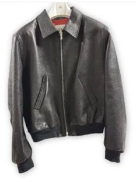
재킷RECTO 블랙 레더 재킷
바닷바람을 막아 주고 비 맞아도 닦으면 돼요. 이틀 내내 입어요.
청바지GLW 블랙 와이드 청바지
편하게 걷기 좋은 와이드 데님이에요. 둘째 날에도 그대로 입어요.
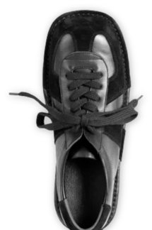
스니커즈투스페이스 블랙 레더 스니커즈
가죽이라 저녁 비에도 괜찮고, 산책로를 오래 걸어도 편해요.
크로스백생로랑 블랙 나일론 크로스백
휴대폰·지갑·카드키만 넣고 산책할 때 가볍게 메요.
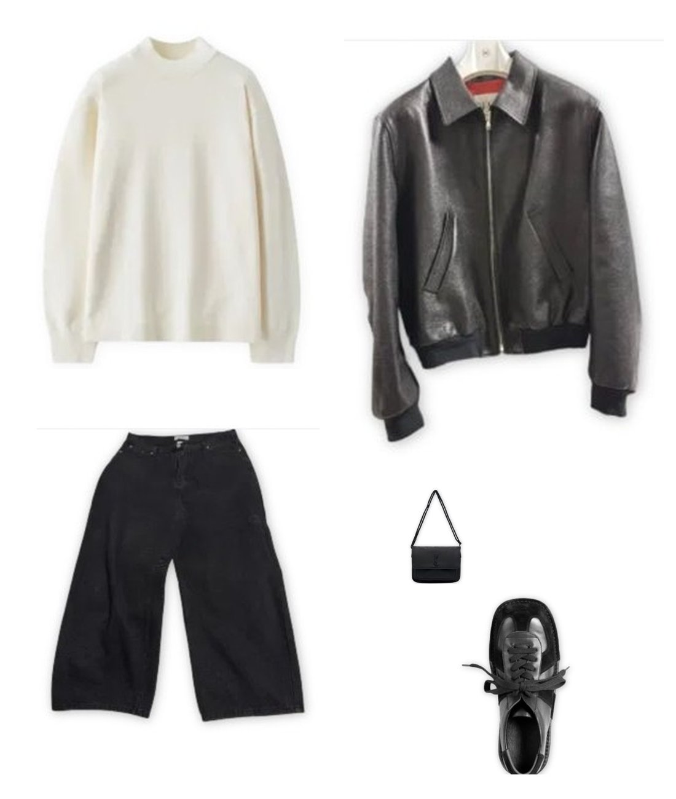
대안
둘째 날: 미나브 아이보리 모크넥 니트 + RECTO 블랙 레더 재킷
비 그친 뒤 찬 공기가 내려오는 둘째 날 버전이에요. 니트만 목까지 올라오는 두꺼운 모크넥으로 바꾸고 바지·신발·재킷은 첫날 그대로 입어 짐을 줄여요. 아이보리가 얼굴을 밝혀 줘서 바다 배경 사진에도 잘 나와요.
니트미나브 아이보리 모크넥 니트
목까지 덮어 바닷바람을 막아 주는 두꺼운 니트예요.
재킷RECTO 블랙 레더 재킷
첫날 입은 재킷을 그대로 입어요.
청바지GLW 블랙 와이드 청바지
첫날 입은 바지를 그대로 입어요.
스니커즈투스페이스 블랙 레더 스니커즈
젖은 길에도 괜찮은 가죽 스니커즈예요.
크로스백생로랑 블랙 나일론 크로스백
가벼운 크로스백 하나면 충분해요.
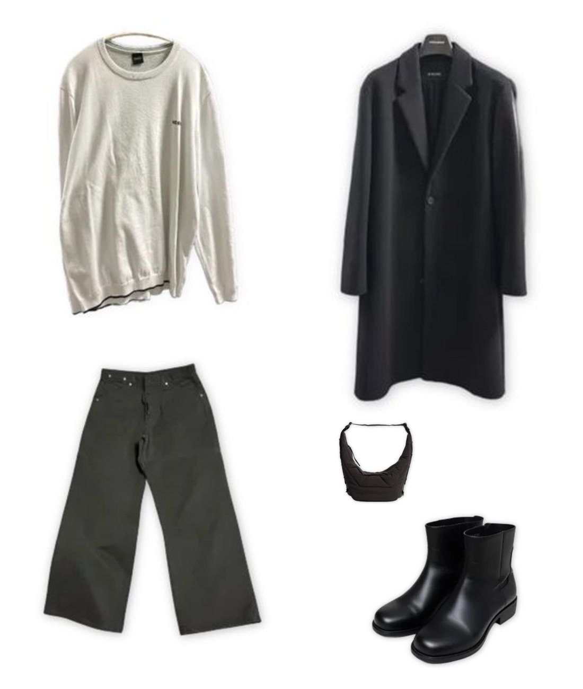
대안
저녁 식사용: BOSS 화이트 니트 + IN SILENCE 블랙 싱글 코트
리조트 레스토랑에서 저녁을 먹거나 둘째 날 더 추울 때 쓰는 단정한 버전이에요. 화이트 니트와 블랙 코트의 대비만으로 깔끔하고, 첼시 부츠는 비에도 강해요.
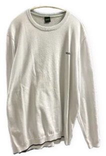
니트BOSS 화이트 니트
화이트라 블랙 코트 안에서 산뜻하게 보여요.
코트IN SILENCE 블랙 싱글 코트
롱 코트라 바닷가 밤바람도 막아 줘요.
긴바지어나더 오피스 차콜 와이드 긴바지
차콜 와이드라 코트 아래 실루엣이 길게 떨어져요.
부츠ROMANTIC MOVE 블랙 첼시 부츠
가죽 첼시 부츠라 빗길에도 괜찮아요.
숄더백르메르 블랙 호보 숄더백
1박 소지품을 넣기 좋은 넉넉한 숄더백이에요.
옷장 자동 조합
POLO RALPH LAUREN 화이트 셔츠 + 쿠어 차콜 워크 재킷
같은 날씨와 격식 기준(무채색 위주, 포인트 컬러는 하나까지)으로 옷장에서 자동으로 고른 조합이에요.
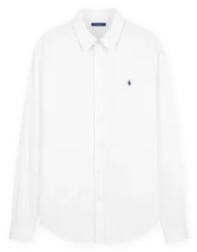
셔츠POLO RALPH LAUREN 화이트 셔츠
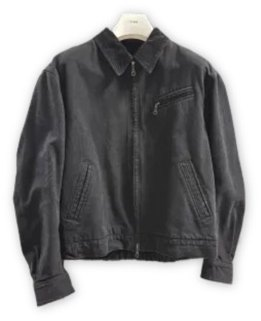
재킷쿠어 차콜 워크 재킷
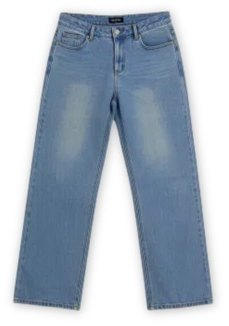
청바지TOFFEE 라이트블루 스트레이트 청바지
스니커즈ADIDAS 화이트 스니커즈
백팩YOUTH 블랙 백팩
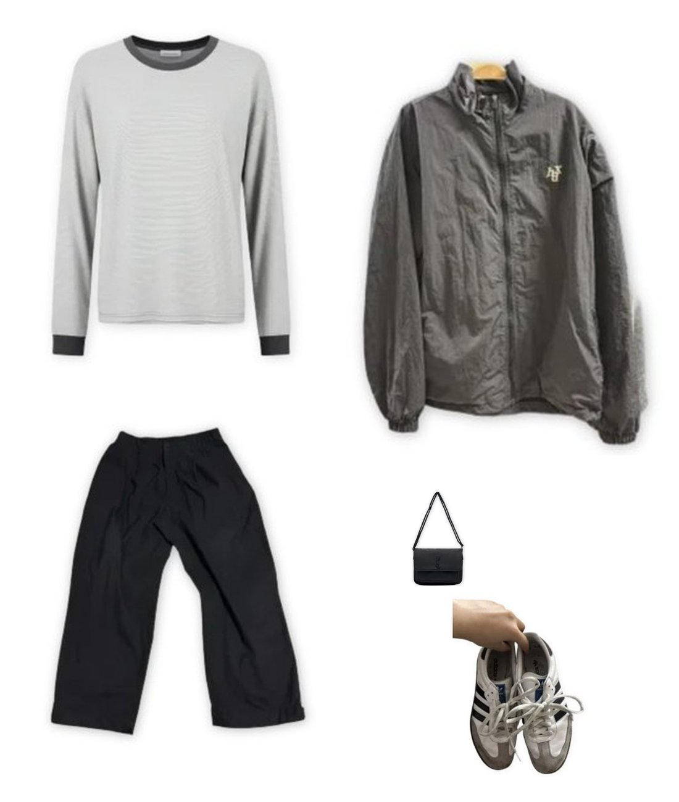
옷장 자동 조합
ART IF ACTS 라이트그레이 링거 긴팔 티 + HDEX 차콜 나일론 재킷
같은 날씨와 격식 기준(무채색 위주, 포인트 컬러는 하나까지)으로 옷장에서 자동으로 고른 조합이에요.
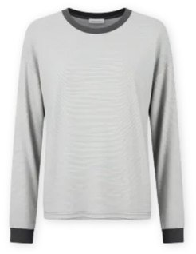
긴팔 티ART IF ACTS 라이트그레이 링거 긴팔 티
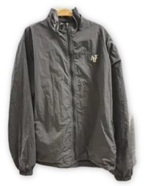
재킷HDEX 차콜 나일론 재킷
긴바지SONGZIO 블랙 와이드 긴바지
스니커즈ADIDAS 화이트 스니커즈
크로스백생로랑 블랙 나일론 크로스백
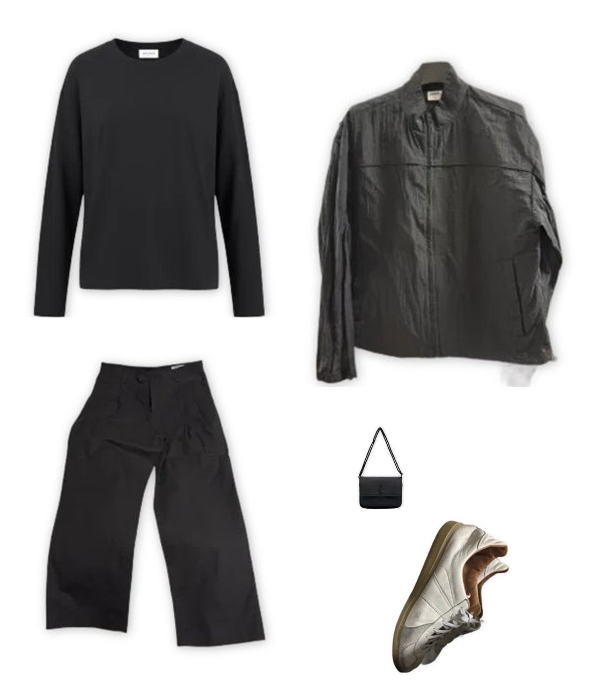
옷장 자동 조합
ZAVANAS 블랙 긴팔 티 + DUMBSTRUCK 블랙 나일론 재킷
같은 날씨와 격식 기준(무채색 위주, 포인트 컬러는 하나까지)으로 옷장에서 자동으로 고른 조합이에요.

 니트브라운야드 차콜 니트
니트브라운야드 차콜 니트 청바지GLW 블랙 와이드 청바지
청바지GLW 블랙 와이드 청바지 크로스백생로랑 블랙 나일론 크로스백
크로스백생로랑 블랙 나일론 크로스백